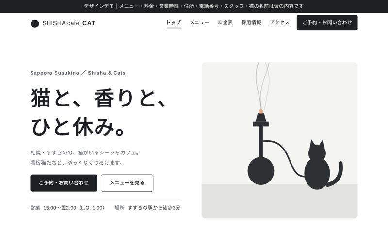
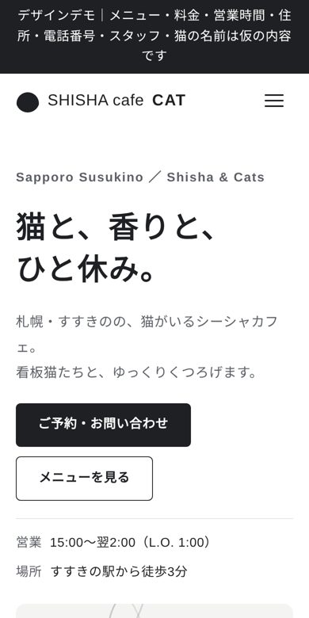
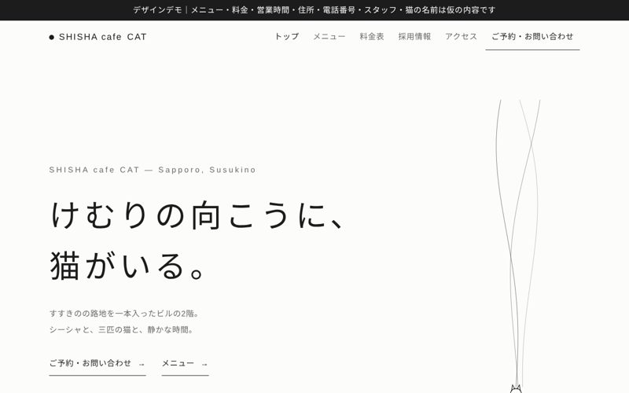
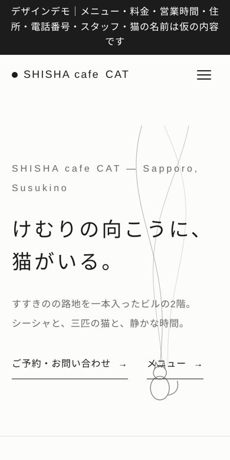
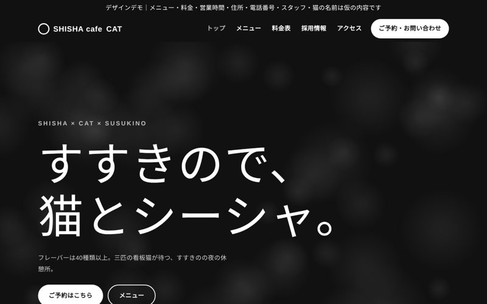
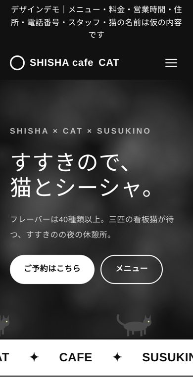
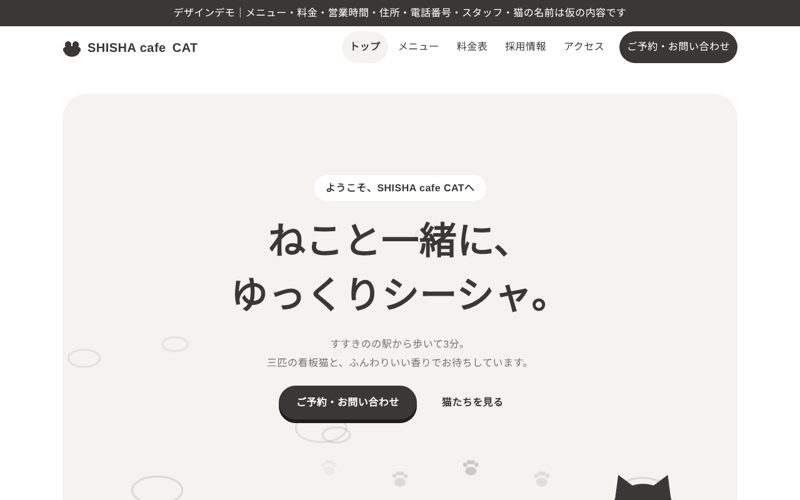
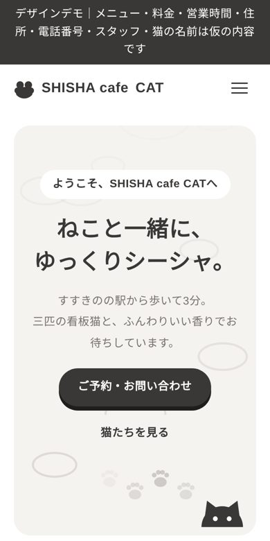
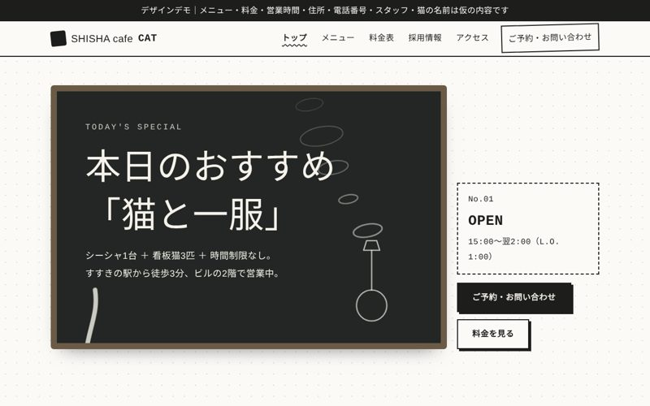
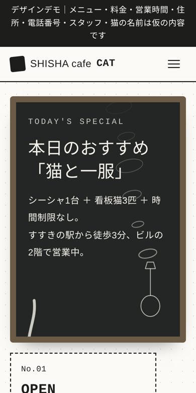

1
王道
白とグレーで清潔感のある、いちばんオーソドックスな構成。トップは猫とシーシャのイラストに煙がゆらぐ演出


ヒアリングの回答をもとに、雰囲気の違う5つのデザインを作りました。どれもトップ・メニュー・料金表・採用情報の4ページ構成で、スマホにも対応しています。画像を押すと、そのパターンが開きます。メニュー・料金・営業時間・住所・電話番号・スタッフ・猫の名前は仮の内容です。
白とグレーで清潔感のある、いちばんオーソドックスな構成。トップは猫とシーシャのイラストに煙がゆらぐ演出


余白と明朝体の文字が主役。線と細い煙だけで見せる、静かで上品な構成


黒の大きなトップに、煙の粒と歩く猫たちが動く大胆な構成。文字も大きく、印象に残す見せ方


丸みのある書体とカードで、親しみやすくやさしい雰囲気。足あとや煙の輪がふわっと浮かぶ構成


カフェの黒板メニューがモチーフ。チョーク風の手書き文字と、煙の輪・揺れるしっぽで遊び心を出した構成

